Modeling Political Support Dynamics Using Wasserstein Generative Adversarial Networks: A Synthetic Data Approach
Karl Ho
University of Texas at Dallas
Prepared for presentation at the SPSA 2025 CWC: Generative Language Models in Political Science Research, January 8-9, 2025.
Motivation
- Real-world datasets are often incomplete, biased, or sensitive to privacy concerns.
- Synthetic data generation offers a promising solution for creating privacy-preserving and robust datasets.
- Wasserstein GANs (WGAN) are particularly effective in generating high-quality synthetic data by minimizing mode collapse.
- Key Question: How can WGANs be utilized to generate realistic and useful synthetic data?
Research Design
Objectives
- Develop a WGAN-based pipeline for synthetic data generation.
- Evaluate the quality of the generated data against real datasets using statistical and domain-specific metrics.
Methodology
- Identify a target dataset for synthetic generation
- Train a WGAN on the dataset to produce synthetic samples.
- Compare synthetic data with real data in terms of:
- Statistical similarity
- Utility for downstream tasks (e.g., machine learning models)
Application
- Data: 2024 US Presidential Elections and Polls
- Tools: Python, TensorFlow/PyTorch, and synthetic data evaluation libraries.
Key Components
- Generator: Learns to map random noise to synthetic data.
- Critic: Evaluates the quality of generated data by estimating Wasserstein distance.
- Loss Function: \[ \mathcal{L}\_{WGAN} = \mathbb{E}D(x) - \mathbb{E}D(G(z)) \]
- Gradient Penalty: Regularizes the critic to enforce the Lipschitz constraint.
Application: US Presidential Elections 2024
The puzzle: according to the polls
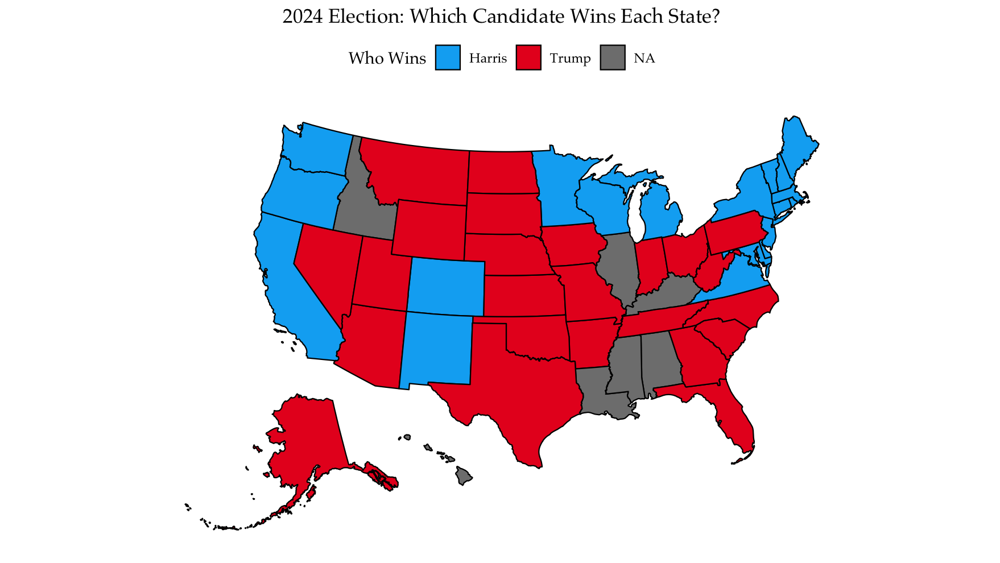
Reality
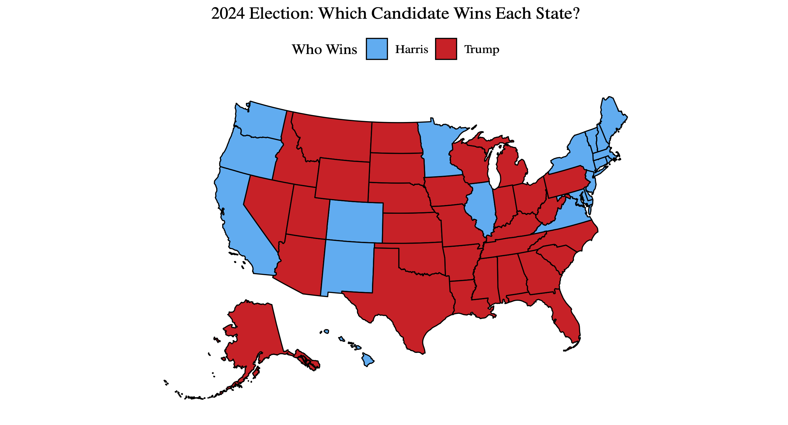- What went wrong?
How much is off?
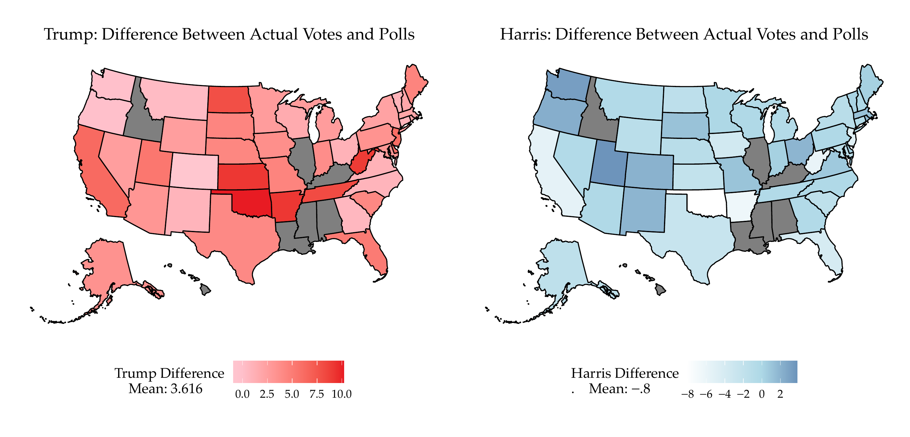How much is off (2)?
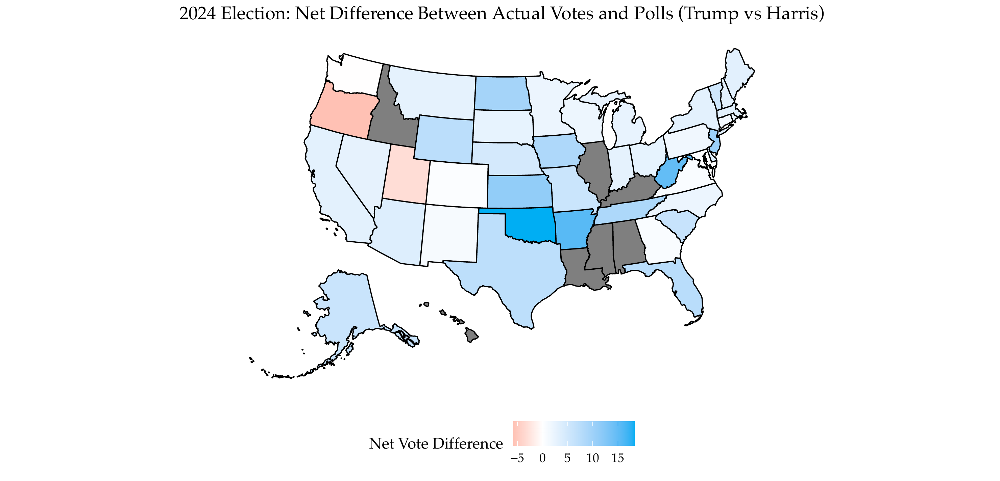Data
- Collected
- election data by states
- poll data by polls and states
- demographic data by states
- media attention by Google Trends
Snapshot
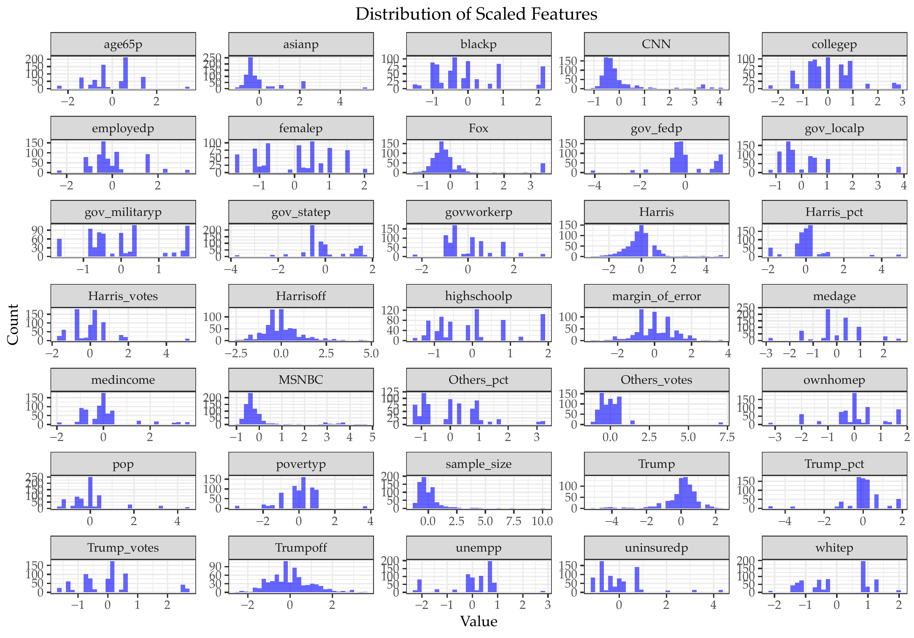Training
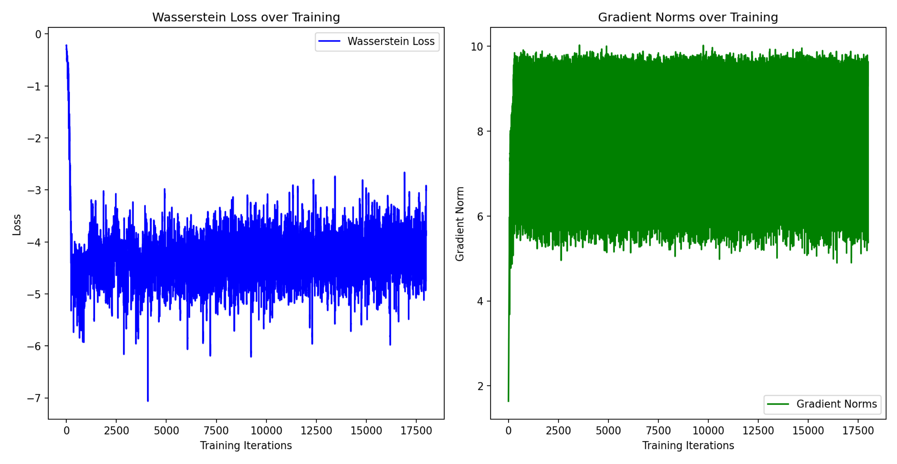Training + Hyperparameter Tuning
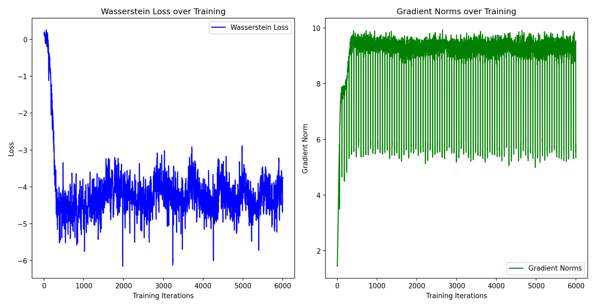 ## Reduced Epochs
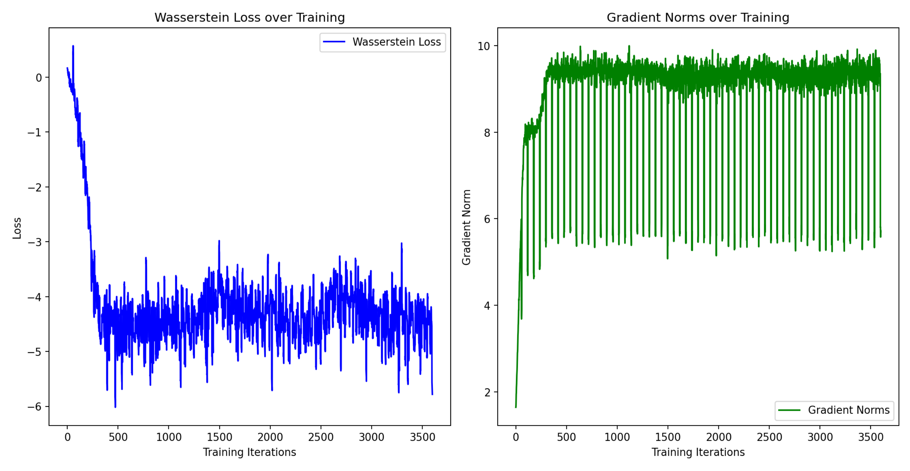
Introduce PCA for Dimensionality Reduction
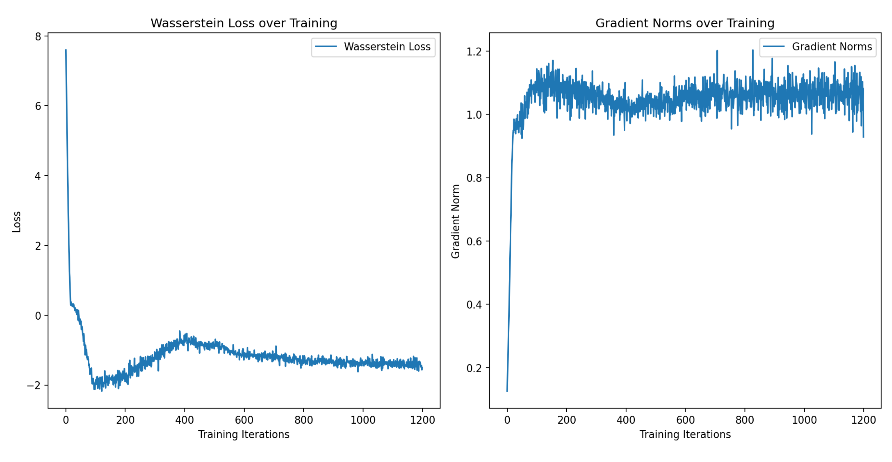Preliminary distribution
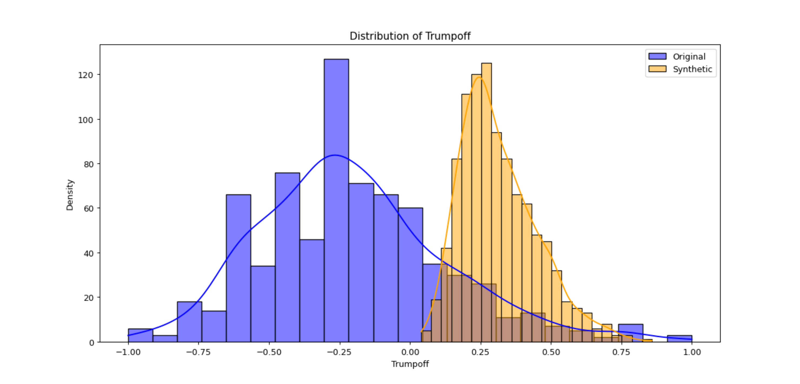Initial map
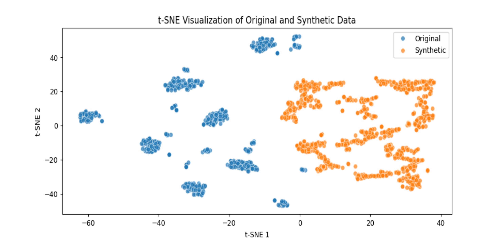Result map
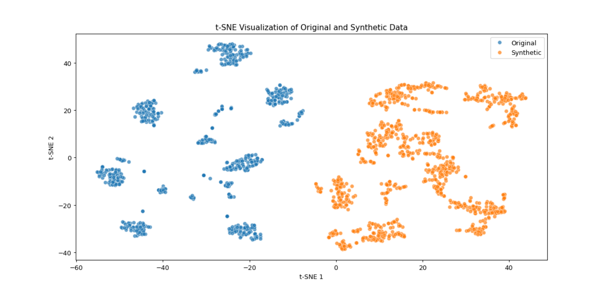Technical difficulties
- Regularization with complex model
- GPU power with NVIDIA
- tensorflow issues
Discussion and Future Research
- Performance of WGANs:
- WGAN can be used for generating synthetic data that approximated the original data distribution and improved statistical metrics.
- Gradient penalties provides stability during training, though hyperparameter tuning (e.g., learning rates, critic iterations) was critical to convergence.
- Computationally dependent
- Challenges
- Training Instability:
- Even with WGAN’s improvements over traditional GANs, ensuring stability across complex datasets remains challenging.
- Gradient vanishing and exploding issues emerged during long training epochs or with complex model architectures.
- Resource Constraints:
- Training WGANs on high-dimensional data proved computationally expensive, requiring advanced GPU capabilities and careful memory management.
- MacOS and M3 do not support cuda
- Training Instability:
- Challenges (continued)
- Synthetic Data Utility:
- While synthetic data closely resembled real data, further testing is needed to validate its utility in predictive tasks, particularly in political science applications with complex data.
- Synthetic Data Utility:
Future Research Directions
- Model Enhancements:
- Explore advanced WGAN variants, such as Wasserstein GAN with Gradient Penalty (WGAN-GP) or Conditional WGANs, to further enhance the quality and diversity of synthetic data.
- Incorporate attention mechanisms or Transformer-based architectures for better performance with sequential or temporal data.
- Dimensionality Reduction and Feature Engineering:
- Investigate more robust dimensionality reduction techniques, such as t-SNE or UMAP, alongside PCA, to capture non-linear dependencies in the data.
- Introduce domain-specific feature engineering for political datasets to improve model interpretability.
- Synthetic Data Evaluation Metrics:
- Develop domain-specific metrics for assessing synthetic data quality in political science contexts, beyond statistical similarity (e.g., predictive accuracy for elections or voter turnout models).
- Investigate privacy-preserving metrics to ensure synthetic data generation aligns with privacy standards (e.g., differential privacy).
- Applications in Political Science:
- Extend the WGAN framework to other political science domains, such as modeling policy preferences, voter turnout, or campaign dynamics.
- Assess how synthetic data can be used in conjunction with real data to improve machine learning model generalizability.
- Scalability and Efficiency:
- Research methods to reduce the computational cost of WGAN training, such as low-rank approximations or model distillation.
- Experiment with federated learning to train WGANs on distributed datasets while maintaining privacy.
Thank you!
Technical Details of WGAN
What is WGAN?
- Wasserstein GAN (WGAN): A variant of GANs designed to improve training stability and data quality by:
- Replacing the Jensen-Shannon Divergence with the Wasserstein distance.
- Using a critic function (instead of a discriminator) to compute the Wasserstein distance.
Wasserstein GAN (WGAN)
Wasserstein GANs (WGANs) are an improvement over traditional Generative Adversarial Networks (GANs) aimed at enhancing training stability and the quality of generated data. The primary distinctions include:
Divergence Measure: Traditional GANs utilize the Jensen-Shannon (JS) Divergence to measure the difference between real and generated data distributions. WGANs replace this with the Wasserstein distance (also known as Earth Mover’s Distance), which provides more meaningful gradients during training, especially when the generator’s distribution differs significantly from the real data distribution.
Critic Function vs. Discriminator: In traditional GANs, the discriminator classifies inputs as real or fake, outputting a probability. In WGANs, this is replaced by a critic function that assigns a real-valued score to inputs, indicating their “realness.” This approach avoids issues like vanishing gradients associated with the sigmoid activation in discriminators, leading to more stable training.
Why is the Critic Function Better than the Discriminator?
The critic function in WGANs offers several advantages over the traditional discriminator:
Unbounded Output: Unlike the discriminator’s output, which is constrained between 0 and 1 due to the sigmoid function, the critic provides unbounded real-valued scores. This unbounded output allows for more nuanced feedback during training.
Improved Gradients: The use of Wasserstein distance ensures that gradients behave more predictably, even when real and generated distributions have minimal overlap. This leads to more reliable updates during training.
Enhanced Training Stability: By eliminating the sigmoid activation and adopting the Wasserstein loss, WGANs mitigate issues like mode collapse and provide more stable convergence during training.
Key Equations
1. Wasserstein Distance
The Wasserstein distance \(W(P_r, P_g)\) between the real data distribution \(P_r\) and the generated data distribution \(P_g\) is defined as:
\[ W(P_r, P_g) = \inf_{\gamma \in \Pi(P_r, P_g)} \mathbb{E}_{(x, y) \sim \gamma} [\|x - y\|] \]
Here, \(\Pi(P_r, P_g)\) denotes the set of all joint distributions \(\gamma(x, y)\) with marginals \(P_r\) and \(P_g\), and \(\|x - y\|\) represents the distance between points \(x\)and \(y\).
2. Critic’s Objective Function
The critic (denoted as \(f\)) aims to maximize the difference between the expected values of real and generated data:
\[ \max_{f \in \mathcal{F}} \mathbb{E}_{x \sim P_r} [f(x)] - \mathbb{E}_{z \sim P_z} [f(G(z))] \]
Here, \(\mathcal{F}\) represents the set of 1-Lipschitz functions, \(P_z\) is the prior distribution, and \(G(z)\) is the generator’s output given input \(z\).
3. Generator’s Objective Function
The generator \(G\) seeks to minimize the critic’s assessment of the generated data:
\[ \min_G \mathbb{E}_{z \sim P_z} [f(G(z))] \]
In practice, the training involves iteratively updating the critic to approximate the Wasserstein distance and then updating the generator to produce data that minimizes this distance.
These modifications enable WGANs to achieve more stable training and generate higher-quality synthetic data compared to traditional GANs.